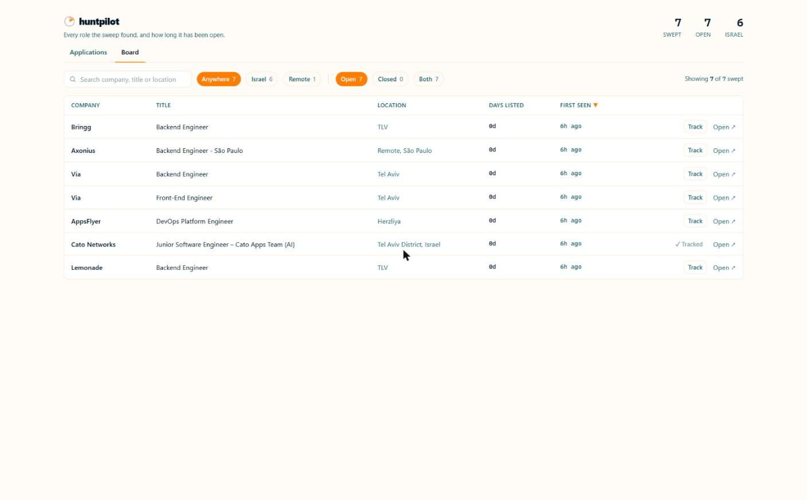
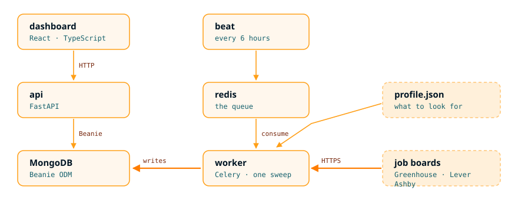

Job boards tell you what is open right now. They never tell you what changed — and the changes are what matter when you are the one applying. huntpilot sweeps company job boards on a schedule and reports the difference.
The role you applied to has disappeared from the board. It is filled. Stop waiting.
You applied 30 days ago and the posting is still live. Silence is not rejection.
The same job, listed every six weeks. Churn, or a spec nobody can meet.
None of that is answerable from a single snapshot. It needs board state stored over time and joined against your own application log — which is the other half of this app.
| gate | what it does | |
|---|---|---|
| fetch | Greenhouse, Lever and Ashby, public JSON, no key and no scraping. A failing board is skipped, never fatal. | free |
| location | Israeli city spellings or advertised remote. Country names alone miss half of them — one sweep held 243 distinct location strings. | free |
| title | A whitelist of five role families, and a drop for titles that state seniority. | free |
| stack | Reads the description: the share of named technologies already known, and the lowest experience figure asked for. | free |
| reconcile | The product. Still listed, newly appeared, or absent — compared against the last sweep. | free |
Every gate is free and local. No model call, no paid API, no scraping — the boards publish this themselves.

Every role the sweep kept, how long it has been listed, and whether it is already in the pipeline. Chips narrow by region and by open or closed; Track copies a posting into the applications list.

The worker reaches the database directly rather than through the API: it is the same codebase run with a different command, so a round trip over HTTP would buy nothing. What it looks for comes from a profile, not from the code.
Run the whole thing, or one sweep by hand:
docker compose up cd api && uv run python -m app.sweep